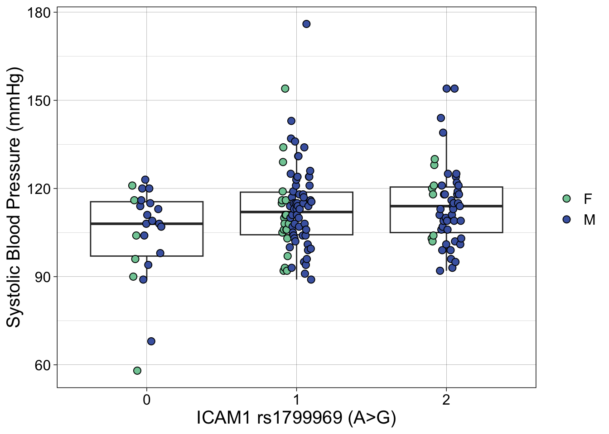

suppressPackageStartupMessages({
library(dplyr)
library(data.table)
library(ggplot2)
library(ggpubr)
})
geno = fread("genotype_master.csv")
pheno = fread("cdp_phenotyping_master.csv")
icam1 = select(geno, id, ICAM1_rs1799969G)
icam1 = left_join(pheno, icam1, by = "id") |>
filter(genotype_exclude == 0)ICAM1 Associations
From the merged dataset, we select key variables for modeling: SBP (sbp_mean), the ICAM1 genotype (ICAM1_rs1799969G, coded additively as 0/1/2 for A/G alleles), sex, and BMI.
icam1 = icam1 |>
select(sbp_mean, ICAM1_rs1799969G, sex, bmi)Linear Regression: Additive Model (without BMI)
We first assess the additive effect of the G allele on SBP, adjusting only for sex.
lm(data = icam1, formula = sbp_mean ~ ICAM1_rs1799969G + sex) |>
summary()
Call:
lm(formula = sbp_mean ~ ICAM1_rs1799969G + sex, data = icam1)
Residuals:
Min 1Q Median 3Q Max
-47.532 -9.086 -0.083 6.458 63.917
Coefficients:
Estimate Std. Error t value Pr(>|t|)
(Intercept) 105.532 3.097 34.079 <2e-16 ***
ICAM1_rs1799969G 4.010 1.769 2.267 0.0249 *
sexM 2.541 2.828 0.898 0.3704
---
Signif. codes: 0 '***' 0.001 '**' 0.01 '*' 0.05 '.' 0.1 ' ' 1
Residual standard error: 14.6 on 149 degrees of freedom
(43 observations deleted due to missingness)
Multiple R-squared: 0.04139, Adjusted R-squared: 0.02853
F-statistic: 3.217 on 2 and 149 DF, p-value: 0.04288Linear Regression: Additive Model (with BMI)
Next, we adjust for potential confounding by body mass index (BMI).
lm(data = icam1, formula = sbp_mean ~ ICAM1_rs1799969G + sex + bmi) |>
summary()
Call:
lm(formula = sbp_mean ~ ICAM1_rs1799969G + sex + bmi, data = icam1)
Residuals:
Min 1Q Median 3Q Max
-53.774 -8.699 -0.674 6.997 63.433
Coefficients:
Estimate Std. Error t value Pr(>|t|)
(Intercept) 83.0563 9.8115 8.465 3.23e-14 ***
ICAM1_rs1799969G 3.9401 1.8211 2.164 0.0322 *
sexM 5.1972 3.1453 1.652 0.1007
bmi 0.7609 0.3262 2.333 0.0211 *
---
Signif. codes: 0 '***' 0.001 '**' 0.01 '*' 0.05 '.' 0.1 ' ' 1
Residual standard error: 14.71 on 139 degrees of freedom
(52 observations deleted due to missingness)
Multiple R-squared: 0.08178, Adjusted R-squared: 0.06196
F-statistic: 4.127 on 3 and 139 DF, p-value: 0.007729In both models above, the G allele of rs1799969 is significantly associated with higher systolic blood pressure, suggesting a potential functional role of this variant in regulating vascular physiology.
Linear Regression: Genotype as Categorical (without BMI)
We now treat genotype as a categorical variable to allow for potential non-linear effects.
lm(data = icam1, formula = sbp_mean ~ as.factor(ICAM1_rs1799969G) + sex) |>
summary()
Call:
lm(formula = sbp_mean ~ as.factor(ICAM1_rs1799969G) + sex, data = icam1)
Residuals:
Min 1Q Median 3Q Max
-44.326 -8.800 -0.069 7.109 62.078
Coefficients:
Estimate Std. Error t value Pr(>|t|)
(Intercept) 102.326 3.677 27.830 < 2e-16 ***
as.factor(ICAM1_rs1799969G)1 8.743 3.447 2.537 0.01223 *
as.factor(ICAM1_rs1799969G)2 9.621 3.660 2.629 0.00948 **
sexM 2.852 2.820 1.011 0.31349
---
Signif. codes: 0 '***' 0.001 '**' 0.01 '*' 0.05 '.' 0.1 ' ' 1
Residual standard error: 14.53 on 148 degrees of freedom
(43 observations deleted due to missingness)
Multiple R-squared: 0.05763, Adjusted R-squared: 0.03853
F-statistic: 3.017 on 3 and 148 DF, p-value: 0.03185Linear Regression: Genotype as Categorical (with BMI)
We repeat this model, now adjusting for BMI.
lm(data = icam1, formula = sbp_mean ~ as.factor(ICAM1_rs1799969G) + sex + bmi) |>
summary()
Call:
lm(formula = sbp_mean ~ as.factor(ICAM1_rs1799969G) + sex + bmi,
data = icam1)
Residuals:
Min 1Q Median 3Q Max
-50.229 -9.104 -1.643 7.562 61.183
Coefficients:
Estimate Std. Error t value Pr(>|t|)
(Intercept) 78.6536 10.0066 7.860 9.83e-13 ***
as.factor(ICAM1_rs1799969G)1 9.6549 3.5529 2.717 0.00742 **
as.factor(ICAM1_rs1799969G)2 9.8019 3.7539 2.611 0.01002 *
sexM 5.5273 3.1225 1.770 0.07891 .
bmi 0.7836 0.3235 2.422 0.01672 *
---
Signif. codes: 0 '***' 0.001 '**' 0.01 '*' 0.05 '.' 0.1 ' ' 1
Residual standard error: 14.58 on 138 degrees of freedom
(52 observations deleted due to missingness)
Multiple R-squared: 0.1044, Adjusted R-squared: 0.07845
F-statistic: 4.022 on 4 and 138 DF, p-value: 0.00407These models reinforce our previous findings. Individuals carrying the G allele tend to have higher SBP, even when accounting for sex and BMI. This effect is consistent whether the genotype is treated as a continuous dosage or as a factor.
Visualization
To visualize the relationship between genotype and SBP, we create a boxplot stratified by genotype and colored by sex.
plt = ggplot(data = icam1, aes(x = as.factor(ICAM1_rs1799969G), y = sbp_mean)) +
geom_boxplot(outlier.shape = NA) +
geom_point(aes(fill = sex), size = 2.5, color = "black", shape = 21, position = position_dodge2(0.2)) +
scale_fill_manual(values = c("#80cba4", "#4965b0")) +
xlab("ICAM1 rs1799969 (A>G)") +
ylab("Systolic Blood Pressure (mmHg)") +
labs(fill = "") +
theme_linedraw() +
theme(text = element_text(size = 15))
suppressWarnings(print(plt))
Interpretation
These results indicate that rs1799969 in the ICAM1 gene is significantly associated with systolic blood pressure levels, where carriers of the G allele tend to exhibit higher SBP.
This association suggests a protective role of the A allele, which may contribute to lower vascular pressure through mechanisms involving endothelial adhesion or immune signaling, given ICAM1’s known biological functions.
Interestingly, population genetic data show that the A allele is substantially more common in Andean populations compared to other global populations. This observation, combined with our association analysis, suggests that the Andean-enriched A allele is associated with lower blood pressure, potentially representing an adaptive cardiovascular trait in high-altitude environments.
Further studies are warranted to investigate the functional mechanisms underlying this association and to explore whether similar effects are observed in other cohorts and ancestries.